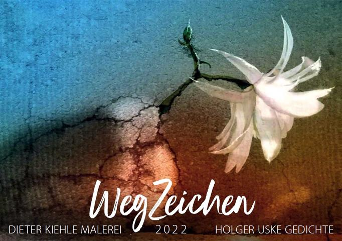
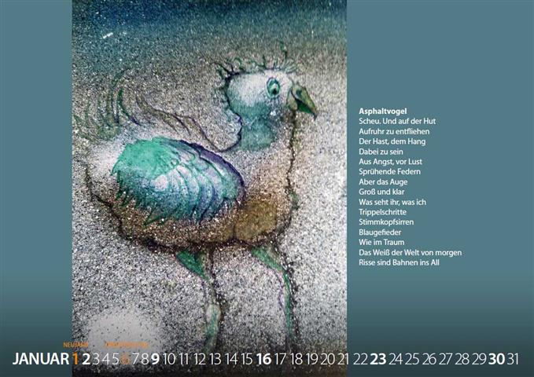
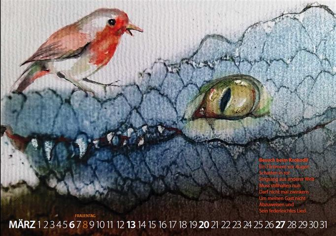
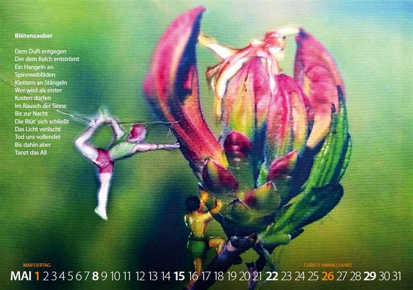
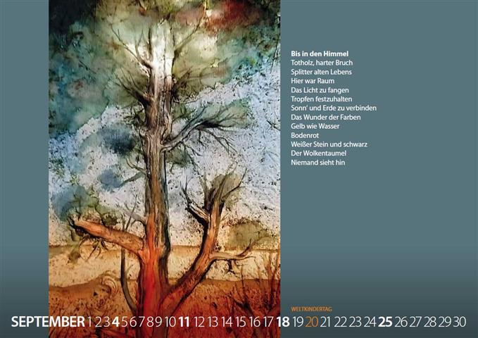

Mit Bildern von Dieter Kiehle und Lyrik von Holger Uske

Nachdem Holger Uske und Dieter Kiehle 2020 eine Lyrik-Grafik-Mappe unter dem Titel „Lichtspiel – Wortspiel" vorgelegt hatten, setzten sie 2021 ihre literarisch-bildkünstlerische Zusammenarbeit im Erzählungsband „Am Saum der Zeit" fort, beides in der Gestaltung von Andreas Kuhrt.
Im November 2021 entschlossen sich die Beteiligten dann, einen Kunst-Lyrik-Kalender für 2022 zu erarbeiten. Auch hierbei waren die Arbeiten von Dieter Kiehle wieder der Ausgangspunkt. Holger Uske näherte sich ihnen literarisch an und eröffnete mit seiner lyrischen Sicht neue Ausblicke. So wurden aus den ursprünglichen Arbeiten auf/zu/mit Rissen in der Straße vor Kiehles Haus letztlich Ausflüge bis ins All.
Der Kalender wurde in einer Auflage von 65 Exemplaren hergestellt und ist im Buchhaus Suhl sowie in der Buchhandlung am Topfmarkt Suhl erhältlich. Die geplante Premiere im Rahmen der nachgeholten Premiere der beiden anderen genannten Publikationen am 2.12.2021 in der Stadtbücherei Suhl musste leider pandemibedingt entfallen.
Dafür zeichnete der Suhler Sender Rennsteig.TV ein Werkstatt-Gespräch von Kiehle, Kuhrt und Uske auf: Werkstattgespräch bei Rennsteig.TV →
Asphaltvogel
Scheu. Und auf der Hut
Aufruhr zu entfliehen
Der Hast, dem Hang
Dabei zu sein
Aus Angst, vor Lust
Sprühende Federn
Aber das Auge
Groß und klar
Was seht ihr, was ich
Trippelschritte
Stimmkopfsirren
Blaugefieder
Wie im Traum
Das Weiß der Welt von morgen
Risse sind Bahnen ins All


Besuch beim Krokodil
Ein Flimmern vor Augen
Schatten in rot
Singsang aus anderer Welt
Muss stillhalten nun
Darf nicht mal zwinkern
Um meinen Gast nicht
Abzuweisen und
Sein federleichtes Lied
Blütenzauber
Dem Duft entgegen
Der dem Kelch entströmt
Ein Hangeln an
Spinnwebfäden
Klettern an Stängeln
Wer wird als erster
Kosten dürfen
Im Rausch der Sinne
Bis zur Nacht
Die Blüt' sich schließt
Das Licht verlischt
Tod uns vollendet
Bis dahin aber
Tanzt das All


Bis in den Himmel
Totholz, harter Bruch
Splitter alten Lebens
Hier war Raum
Das Licht zu fangen
Tropfen festzuhalten
Sonn' und Erde zu verbinden
Das Wunder der Farben
Gelb wie Wasser
Bodenrot
Weißer Stein und schwarz
Der Wolkentaumel
Niemand sieht hin